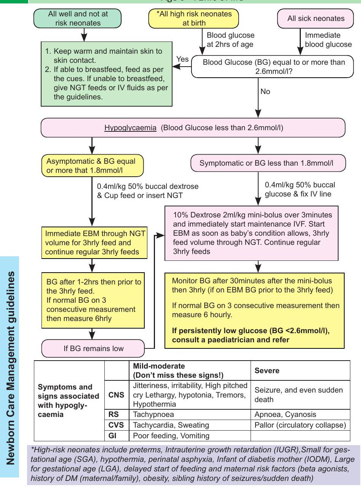
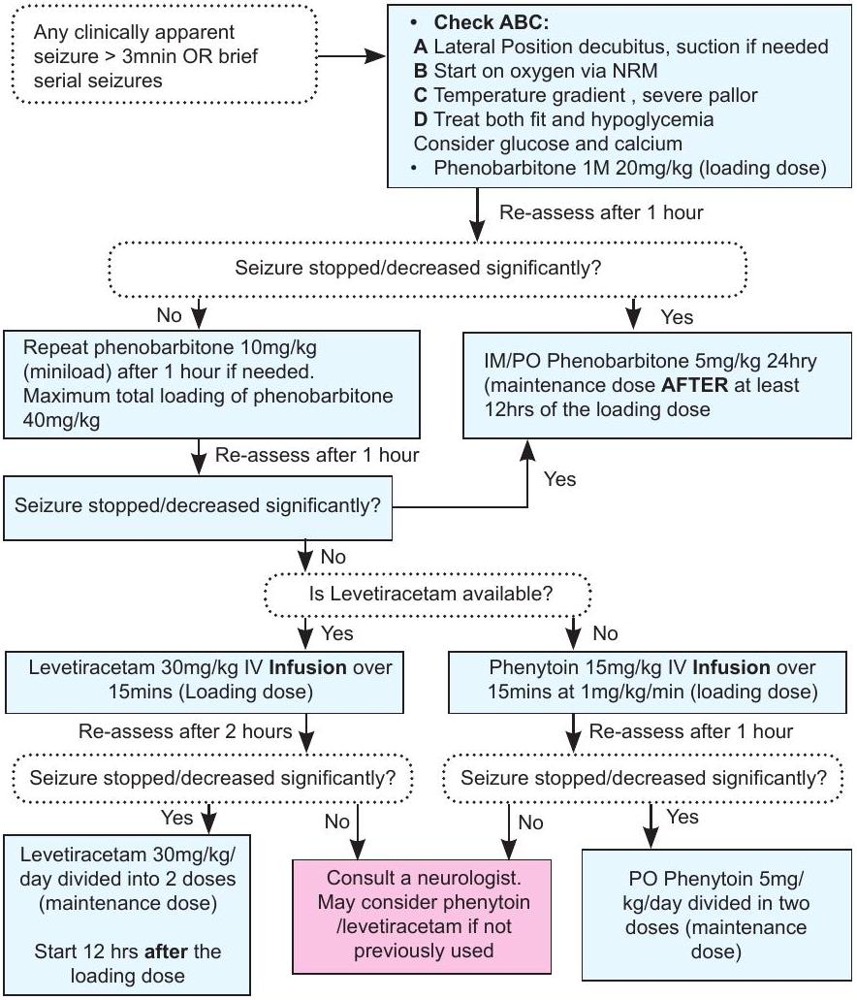
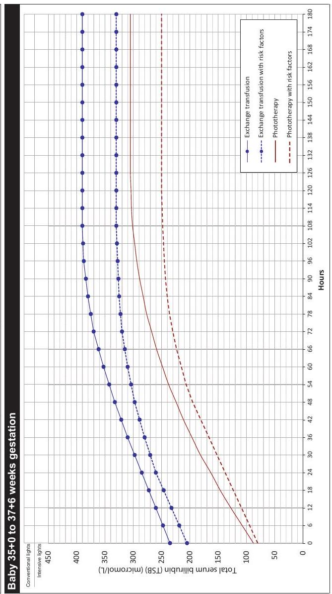
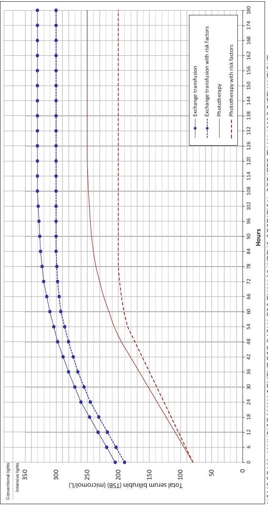
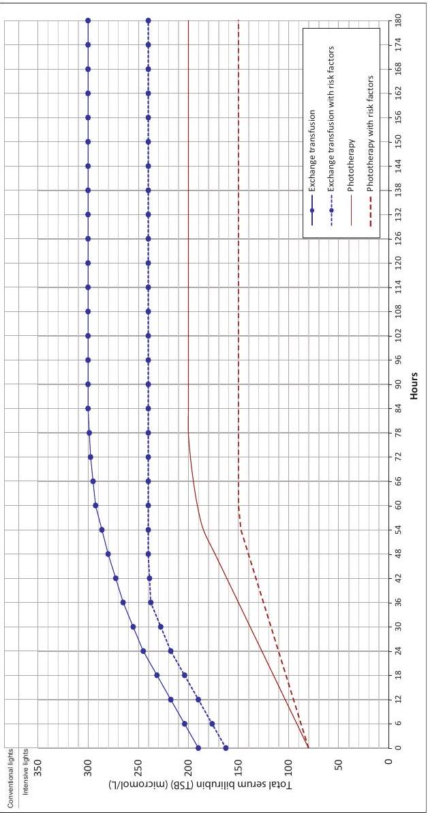

Newborn Care (Part 2): Common Problems
Early Onset Neonatal Hypoglycemia
Age 0-72hrs of life
Neonatal Convulsions
In the absence of clinical seizures, neonates with hypoxic-ischemic encephalopathy need not to be given prophylactic treatment with phenobarbitone.
WHEN TO STOP ANTICONVULSANTS:
- In neonates with neurological examination and/or normal electroencephalography, consider stopping antiepileptic drugs if neonate has been seizure-free for more than 72 hrs; the drug(s) should be reinstituted in case of reoccurrence of seizures.
- In neonates in whom seizure control is achieved with a single antiepileptic drug, the drug can be discontinued abruptly without tapering of the doses.
- In neonates requiring more than one antiepileptic drug for seizure control, the drugs may be stopped one by one, with phenobarbital being the last drug to be withdrawn.
Neonatal Jaundice
- Assess for jaundice in bright natural light if possible. Check the eyes, the blanched skin on nose and the sole of the foot.
- Refer early if there is jaundice in those aged <24 hrs and facility cannot provide phototherapy and/or exchange transfusion
- If bilirubin measure is unavailable start phototherapy in the following:
- A well-baby with jaundice easily visible on the sole of the foot
- A preterm baby with ANY visible jaundice
- A baby with easily visible jaundice and inability to feed or other signs of neurological impairment and consider immediate exchange transfusion
- Risk factors for bilirubin encephalopathy- dehydration, preterm births, respiratory distress, sepsis, hypoxia, seizures.
- Stop phototherapy - when bilirubin levels 50 micromol/L lower than phototherapy threshold (see next page) for the baby's age on day of testing.
Normograms
NORMOGRAM A - Jaundice Management for Baby Greater than 38 Wks Gestation
- In the presence of risk factors (sepsis, haemolysis, acidosis or asphyxia) use the lower line.
- If baby is greater than 12 hours old with total serum bilirubin (TSB) 1-50 micromol/L below the line, repeat the TSB within 6-24 hours.
- Babies under phototherapy:
- Consider measuring the TSB 4-6 hourly until the rise of serum bilirubin is known to be controlled, then measure TSB 12-24 hourly.
- If the TSB is greater than 50 micromol/L below line, stop phototherapy and recheck in 12-24 hours.
- If baby presents with TSB above threshold and the TSB is not expected to be below the threshold after 6 hours of intensive phototherapy, an exchange transfusion is indicated.
- If there are signs of bilirubin encephalopathy an immediate exchange transfusion is recommended.
NOMOGRAM B: Jaundice Management for Baby 35+0 to 37+6 Weeks Gestation
NORMOGRAM C - Jaundice management for Baby Less than 35Wks Gestation, Greater than 1999 G Birth Weight
NORMOGRAM D - Jaundice Management For Baby Less Than 35Wks Gestation, 1500G - 1999 G Birth Weight
NORMOGRAM E - Jaundice Management for Baby Less than 35Wks Gestation, 1000G - 1499 G Birth Weight